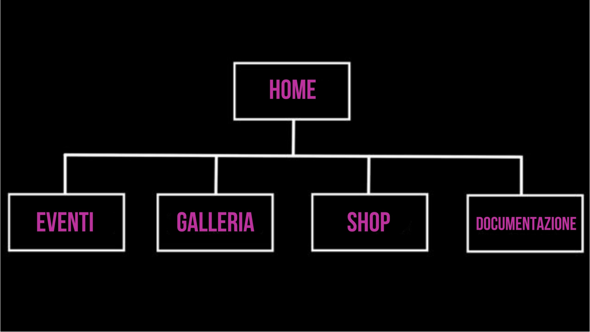

Il sito del locale DOLLHOUSE ha come obbiettivi principali quelli di aumentare la visibilità online, fornire informazioni chiare e dettagliate alla clientela e promuovere gli eventi. Il target principale sono le ragazze e i ragazzi dai 18 ai 30 anni, appassionati del genere musicale techno, alla ricerca di un locale stravagante e unico dove partecipare a serate di qualità. Il valore aggiuntivo del sito è la chiarezza e la comodità dei servizi che mette a disposizione, come la galleria fotografica, l'acquisto diretto a i ticket degli eventi e lo shop del merchandising.
1.1 OBBIETTIVI
L’obiettivo è creare eccitazione e attirare il pubblico target per partecipare agli eventi e rendere la loro esperienza qualcosa di indimenticabile: il sito cerca di costruire una community, proponendo l’acquisto del merchandising agli appassionati del locale e l’iscrizione alla newsletter, per non perdersi mai nessuna data o evento speciale, rimanere in contatto e mantenere il pubblico coinvolto. Il sito, inoltre, rende visibili le fotografie scattate durante le serate e i link alle pagine social, per facilitare la comunicazione e l'interazione con il pubblico.
1.2 TARGET UTENTE
Il target a cui è maggiormente consigliata l'utenza del locale va dai 18 anni, essendo una discoteca vietata ai minori, ai 30, in quanto il genere musicale techno attrae da sempre anche persone più adulte rispetto alle classiche discoteche da adolescenti. Dollhouse si rispecchia negli ideali di inclusività e accoglienza, e ripudia ogni genere di discriminazione.
1.3 COMPETITORS
Come competitors abbiamo analizzato altre tre discoteche situate a Bologna. La prima, con la nomea di essere la discoteca più popolare della scena Bolognese, è il Matis, ma questa non possiede un vero e proprio sito, si limita a comunicare tramite le pagine social, come Instagram e Facebook. La seconda discoteca che abbiamo preso in considerazione è il Numa, discoteca altamente frequentata ma a differenza della Dollhouse, si tratta di un locale di musica commerciale. Il sito del Numa presenta informazioni utili sugli eventi e sull'acquisto dei biglietti, ma non mette a disposizione una galleria fotografica o uno shop. La terza discoteca analizzata è il Kindergarten, locale prettamente techno bolognese: il sito presenta una sezione dedicata agli eventi, ma questa cliccandola ci indirizza alla pagina Facebook, e la sezione della galleria presenta delle foto storiche del locale, non quelle delle serate recenti.
2.1 ARCHITETTURA DEL SITO

2.2 WIREFRAME


2.3 LOOK AND FEEL
Trattandosi di un sito web creato per una discoteca techno abbiamo scelto come palette di colori il viola, magenta, il lilla e il nero (#BD319E, #522870, #9F6AC4, rgb 0,0,0) essendo dei colori audaci che ricordano le luci della discoteca. Le immagini utilizzate mostrano alla clientela l'energia e il mood del locale. I font utilizzati sono stati Charcoal, Roboto e Beas Neue, tutti molto leggibili, chiari e di impatto.
3.1 LINGUAGGI WEB UTILIZZATI
HTML e CSS
3.2 STRUMENTI TECNOLOGICI UTILIZZATI
- Visual Studio Code come text editor
- Photoshop per l'editing delle immagini e la creazione dei loghi
- Canva per la creazione dei loghi e le locandine
- Adobe Color per la palette di colori
- Procreate per la realizzazione del diagramma ad albero e del wireframe
- Github per la pubblicazione del sito
- Google Analytics per il monitoraggio delle visualizzazioni del sito
1. BACKGROUND
Tra le tante discoteche, di Bologna e non, anche alcune delle più celebri non possiedono un sito web, o comunque questo non si presenta molto curato o manca di alcuni servizi. I locali, infatti, sembrano utilizzare quasi esclusivamente le loro pagine social per quanto riguarda la promozione degli eventi e la comunicazione verso la clientela. Per questo motivo abbiamo deciso di creare un sito completo in tutto e per tutto, per dare notorietà alla nostra discoteca, e ci siamo ispirate ai siti delle discoteche di Ibiza più famose del mondo.
2. OBBIETTIVI COMUNICATIVI
Il sito diventa un punto di riferimento, strumento utile sia per i frequentanti abituali della Dollhouse, per tenersi aggiornati sugli eventi, andare a riguardare le foto scattate in serata, acquistare il merchandising e visualizzare tutte le novità, avendo anche la possibilità di essere informati tramite email con l'iscrizione alla Newsletter, ma anche per chi non avesse mai visitato il locale e dovesse scegliere dove passare una serata: noi pensiamo che soprattutto in questa evenienza, un sito curato, bello da vedere, semplice da utilizzare, efficace nei servizi che offre, possa essere decisivo nella scelta tra questa, e le discoteche competitors.
3. TARGET AUDIENCE DEL MESSAGGIO
Il sito della Dollhouse si rivolge a un target primario che include i giovani dai 18 ai 30 anni, nello specifico appassionati del genere musicale techno, appassionati della vita notturna e del clubbing, alla ricerca di un locale nuovo e diverso dagli altri. Per raggiungere questo target i social più efficace sono TikTok e Instagram, estremamente frequentati da giovani che rientrano in questa fascia d'età e capaci di mostrare agli utenti le fotografie e i video delle serate per attirarli. Il taget secondario sono le persone più adulte, dai 30 ai 40 anni, appassionati da sempre di Techno che cercano un modo per divertirsi e ascoltare ancora musica di qualità nonostante nella scena dei locali degli ultimi anni siano molto più diffuse discoteche commerciali per ragazzi e ragazze molto giovani. Per raggiungere questo audience il social da utilizzare è Facebook, promuovendo serate dedicate a sottogeneri specifici della techno, come la techno degli anni '90. Il messaggio che si vuole far arrivare è che la Dollhouse è una discoteca che prende a cuore il divertimento di tutti, e svolge con serietà il suo compito di celebrare la Techno e liberarla dai soliti pregiudizi.
4. PROMOZIONE
Il sito web è stato promosso con la creazione di due pagine social, una su Instagram e una su TikTok, dove verrà fatta la presentazione della nuova discoteca e si potranno visualizzare gli aggiornamenti degli eventi. Inoltre saranno pubblicizzati video e foto per attirare l'attenzione di nuovi clienti. Su Instagram abbiamo iniziato la sponsorizzazione tramite delle storie con lo scopo di creare hype e aspettative sui prossimi eventi senza fornire troppe informazioni, mantenendo una sfera di mistero e attesa. Su Tiktok abbiamo pubblicizzato un video che mostra la gif della home. In tutti i social abbiamo linkato il sito, in modo che sia facilmente raggiungibile.
5. VALUTAZIONE DEI RISULTATI
Su Instagram l'obbiettivo prefissato era di 50 followers, che nei primi due giorni dalla pubblicazione è stato raggiunto con successo, e sta continuando ad aumentare. Su TikTok il primo video pubblicato ha raggiunto più di 600 views. Grazie a Google Analytics possiamo monitorare le visualizzazioni del sito web.